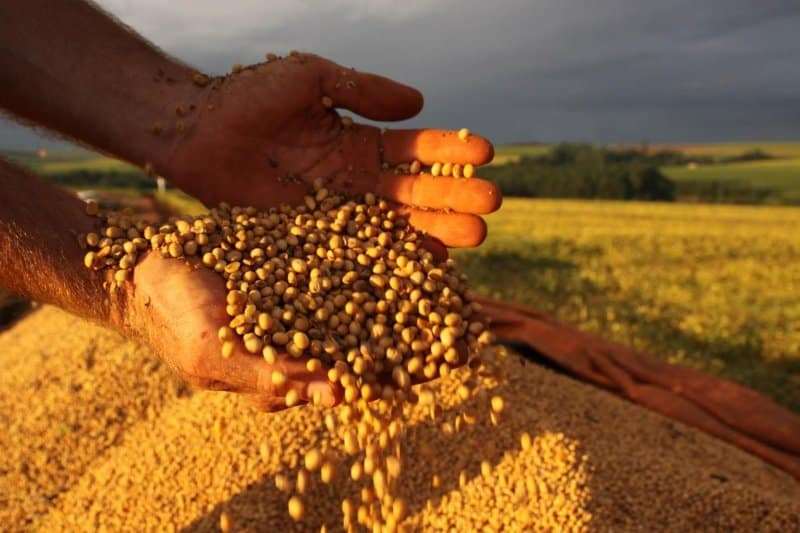
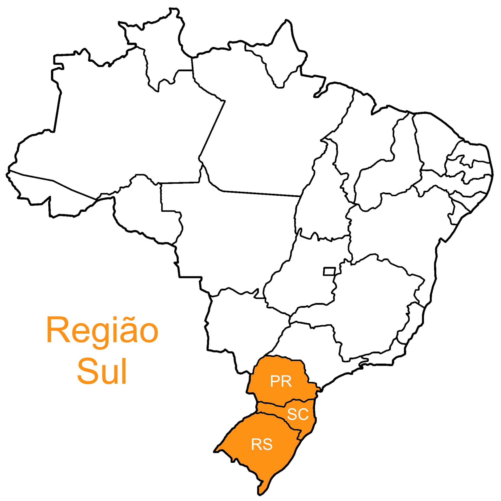
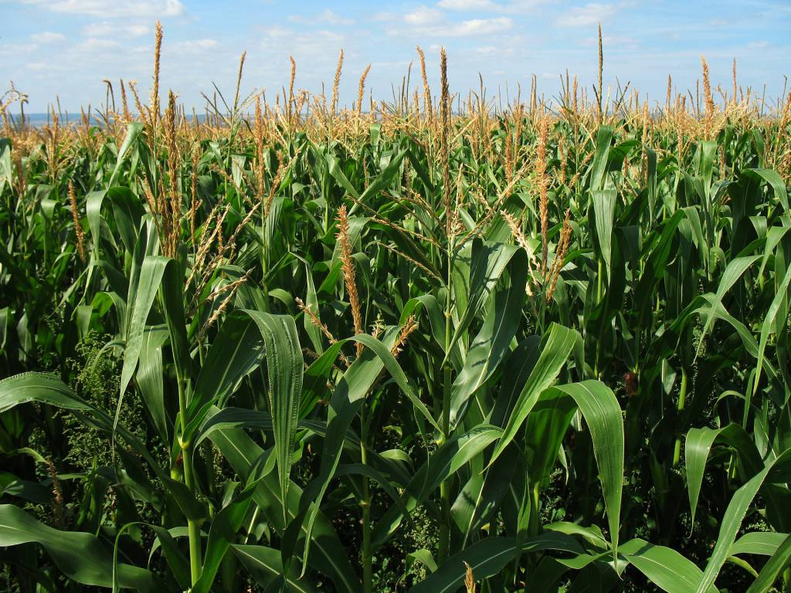

Na região sul do Brasil, o plantio e a colheita das culturas seguem um calendário determinado pelo clima e
pelas características das plantas. Na primavera, ocorre o plantio de culturas como milho, soja e feijão,
com a escolha da data influenciada pelo ciclo lunar. Durante o verão, as culturas atingem seu pleno desenvolvimento,
e os agricultores monitoram e protegem as plantações. No outono, as colheitas estão em andamento, com base em indicadores
como a maturidade das plantas e as condições climáticas. Durante o inverno, os agricultores se preparam para a próxima safra.
O sucesso do plantio e da colheita depende do planejamento cuidadoso e
da combinação de conhecimento tradicional com técnicas modernas de cultivo.
O clima temperado e as condições geográficas do sul do Brasil favorecem a produção agrícola diversificada.
As estações bem definidas,
com invernos frios e verões quentes e úmidos, permitem o cultivo ao longo do ano.


